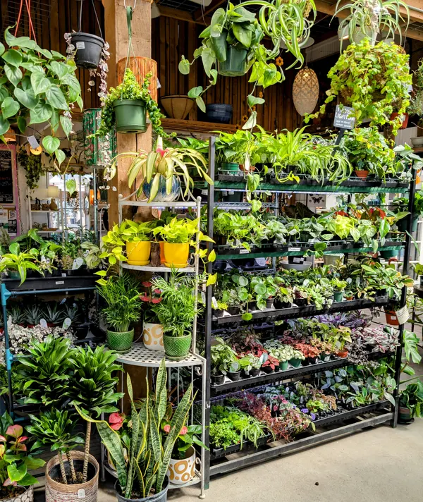
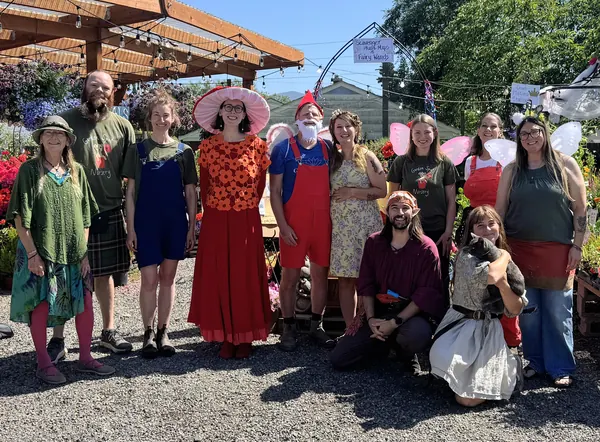

Home / Our story
From Wallingford Center to the corner of Alabama and King
Garden Spot Nursery was founded as a community-based business, and it is still one: locally owned, with a team that loves what grows here.
1985
Marcy opens Garden Spot Nursery in Wallingford Center in Seattle.
Five years later
A second, seasonal location opens in Sunnyland Square, where Cruising Coffee is now.
A few years on
Marcy sells the Seattle location, and Bellingham moves down the street to Alabama and King.
2012
Paige walks in looking for a flexible job outside, and starts as a cashier.
January 2021
After 36 years of business, Marcy passes the torch, and Paige Lanham becomes the owner.
A New Leaf
Paige grew up in Washington and came to Bellingham to attend Western Washington University, where she double majored in Biology and English. She started at Garden Spot knowing very little about plants, then became the plant receiver, then worked the sales floor, helping gardeners and playing with plants.
“I was 28 when I took over,” she said. “I was full of enough passion to ignore everyone’s warnings about the risk of owning a small business, but it is wild to think about how little I knew and how much I’ve learned since.”
“Even a humble beginner gardener can blossom into a strong nursery woman.”

The team

Paige
Owner since January 2021
Started as a cashier in 2012. Studied Biology at WWU, raises and studies earthworms, and grows hundreds of tomatoes every summer.
Aaron
Full-time since spring 2021
Especially loves conifers and Japanese maples. Favorite plant: the Chief Joseph Pine, and anything from the Dan Hinkley Collection.
Debra
On the team since 2002
Loves bringing plants together in a cohesive design, playing with colors, textures, and shapes.
Angela
Since spring 2018
Grew up with more plants than people. Usually found among the Japanese maples and shade plants.
Tiffany
Since 2021
Houseplants are her happy place. Especially enjoys the veggie section, and grows aquaponic vegetables at home.
Evan
Since March 2022
Our terrariums wizard, whose true passion is bonsai. Favorite plant to bonsai: the ficus.
Zack
Since May 2023
Loves houseplants, the greenhouse, and our statuary collection. Used to work full-time as a photographer.
Heidi
Since February 2024
Deep love for flowers, a magical patio garden, and a collection of 45 houseplants.
Hay
Since March 2025
A unique appreciation for grasses and prairie plants, grown while doing research for the USDA.
Laurie
Since March 2025
Loves ALL plants, with a special fondness for growing from seeds she saved herself.
Ari
Since March 2025
A big fern enthusiast who loves meeting the dogs that come in. Some of her crafts are for sale in the store.
Debbie
On her 5th season
Our resident crafter: driftwood displays, wreaths and furniture. Pick: flowering perennials.
Malcolm
Since May 2026
Has already lifted his way through most of the pots in the nursery. Favorite plant: heuchera.
Poppy
Since January 2023
Started as an intern, now Chief morale officer. Hangs out in receiving and hides toys and treats.
Our community
We are proud to support the Bellingham Boys and Girls Club with our Christmas tree sale. Proceeds help children in low-income neighborhoods of Bellingham: the club serves kids who have no other place to go, feeds them after school, and makes sure their homework is completed.
Over the years we have donated thousands of dollars of goods and services to dozens of local organizations. It means a great deal to us that we can give back to the community that has so warmly supported us.
Organizations we support (41)
- 4th Corner Fly Fishers
- Alternative Humane Society
- Anansi Guana Education Sponsor
- Animals as Natural Therapy
- Bellingham Central Lions Club
- Bellingham Emblem Club
- Bellingham Festival of Music
- Bellingham Food Bank
- Bellingham High School PTSA
- Bellingham Public School Robotics Program
- Bellingham Senior Center
- Bellingham Unitarian Fellowship
- Blue Skies for Children
- Brigid Collins Family Support Center
- Catholic Community Services
- Children's Co-op Preschool
- Explorations Academy
- From A Child's Point of View
- Habitat for Humanity
- Human Rights Film Festival
- Interfaith Coalition
- Lake Whatcom Residential Treatment Center
- Master Gardener Foundation
- Parkview School Garden Project
- Samish Campfire Council
- Skyline Elementary PTO
- Subdued City Rollers
- Sunnyland Elementary School
- Sustainable Connections
- Western Washington University Sports Auction
- Western Washington University Student Health
- Whatcom Center for Early Learning
- Whatcom County Master Gardeners
- Whatcom County Million Trees Project
- Whatcom Family & Community Network
- Whatcom Health Center Planned Parenthood
- Whatcom Horticultural Society
- Whatcom Humane Society
- Whatcom Literacy Council
- Whatcom Pregnancy Center Walkathon
- Whatcom Rowing Association